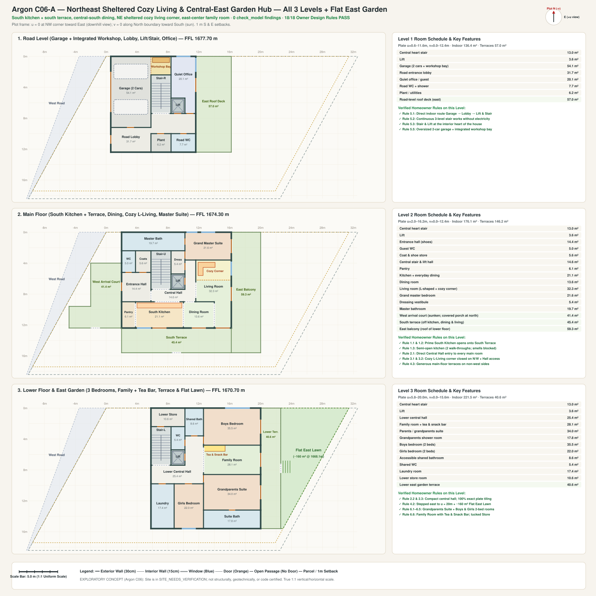
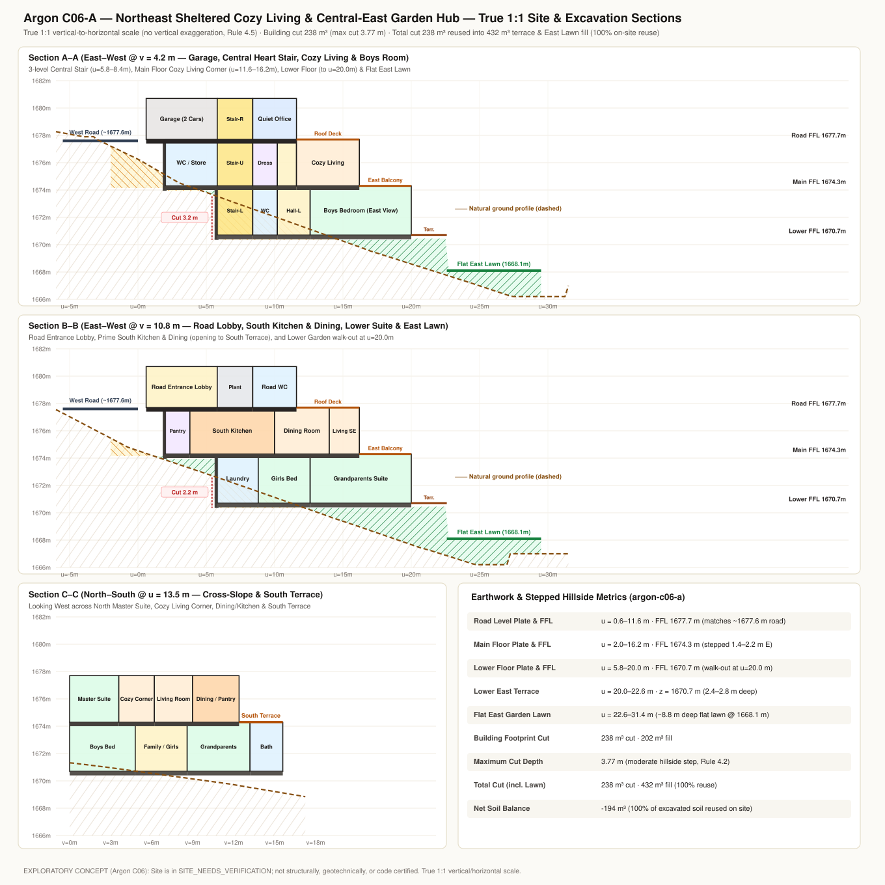

Places the kitchen on the prime south facade with a direct sliding door to the 45.4 m² south terrace, dining beside it at south-center, and an L-shaped living room along the east/south-east view with a sheltered 12.0 m² cozy sitting corner in its north-east wing (completely closed off from the stair hall and kitchen). Downstairs, the family room + tea bar occupies the central-east garden front between the boys' NE bedroom and grandparents' SE suite.
0 check_model findings 18/18 Owner Design Rules PASS Building Cut: 238.0 m³ (100% On-Site Reuse)
| Level | FFL (m) | Indoor Area (m²) | Terrace / Court Area (m²) | Earthwork & Garden Summary |
|---|---|---|---|---|
| 1. Road Level (`lv-upper`) | 1677.70 | 136.4 | 57.0 |
Building Cut: 238.0 m³ Max Cut Depth: 3.77 m Terrace & East Lawn Fill: 431.9 m³ Flat East Lawn: ~160 m² at 1668.1 m (u = 22.6–31.4 m) |
| 2. Main Floor (`lv-entry`) | 1674.30 | 176.1 | 146.2 | |
| 3. Lower Floor (`lv-lower`) | 1670.70 | 221.5 | 40.6 | |
| Total | 3 Stepped Levels | 534.0 m² | 243.8 m² | 100% of excavated rock/soil reused on site |


| Rule | Requirement | Status | Verified Evidence |
|---|---|---|---|
| Rule 1.1 | Kitchen opens directly onto South Terrace and looks south | PASS | Sliding door d-out + window directly from sp-kitchen to sp-terrace-south |
| Rule 1.2 | Kitchen gets prime south frontage | PASS | Kitchen spans 6.2 m along south edge v=12.4 m |
| Rule 1.3 | Semi-open kitchen with 2 doorless walk-throughs; cooking smells kept out of living | PASS | 3 doorless walk-throughs; zero direct opening between kitchen and living |
| Rule 1.4 | Everyday dining in kitchen; guest dining next to kitchen | PASS | Kitchen 21.1 m², Dining 13.6 m² adjacent |
| Rule 2.1 | Every main room reached directly from entrance/stair hall (never through another room) | PASS | Direct openings from central hall to Kitchen, Dining, Living, Master Suite, and all 3 lower bedrooms |
| Rule 2.2 | No long institutional corridors | PASS | Compact central foyer/stair hall (14.6 m² main, 25.4 m² lower) |
| Rule 2.3 | No voids, leftover holes, or puzzle layouts (100% exact plate tiling) | PASS | Mathematical 0.00 m² gap and 0.00 m² overlap across all 3 floor plates |
| Rule 2.4 | No unnecessary interior doors or barriers | PASS | Wide doorless openings between Entry, Central Hall, Living, Dining, Kitchen, Pantry, and Family Room |
| Rule 3.1 | Living room has a cozy, sheltered L-shaped sitting corner closed on north/hall side | PASS | Cozy corner (12.0 m²) screened by solid north & west walls |
| Rule 3.2 | Living room closed-off corner is not cut off (direct wide opening from Central Hall) | PASS | 2.0 m wide direct doorless opening from sp-hall-u into sp-living |
| Rule 4.1 | South and east prime frontage used for day rooms and terraces | PASS | South = Kitchen, Dining, Living & South Terrace; East = Living, Master, Lower Bedrooms & Balconies |
| Rule 4.2 | House steps east to u ≈ 20 m (not narrow towards east, stmt-018) | PASS | Road u=0.6–11.6 m, Main u=2.0–16.2 m, Lower u=5.8–20.0 m |
| Rule 4.3 | Generous terraces on main floor in non-west directions | PASS | 146.2 m² of outdoor terraces/courts on the main floor |
| Rule 5.1 | Indoor route from garage straight to lift and stair (for groceries) | PASS | Direct interior door sp-garage -> sp-lobby -> sp-lift-r & sp-stair-r |
| Rule 5.2 | One continuous stair connects Road, Main, and Lower floors (works without electricity) | PASS | Two stacked U-flights (stair-main-road + stair-lower-main) in the same 2.6×5.0 m shaft |
| Rule 5.3 | Stair is at the heart of the house, not hidden in a perimeter corner | PASS | Central spine u=5.8–8.4 m, v=2.4–7.4 m |
| Rule 5.5 | Oversized 2-car garage (~55–60 m²) with integrated workshop bay (stmt-018) | PASS | Garage + workshop bay = 54.1 m² (5.2×9.2 m car bay + 2.6×2.4 m workbench alcove) |
| Rule 6.1–6.6 | Master en-suite upstairs; 3 bedrooms + Family Tea/Snack Bar + tucked Store downstairs | PASS | Master 21.6 m²; Grandparents 34.0 m²; Boys 35.5 m²; Girls 22.0 m²; Family+Tea Bar 28.1 m² |